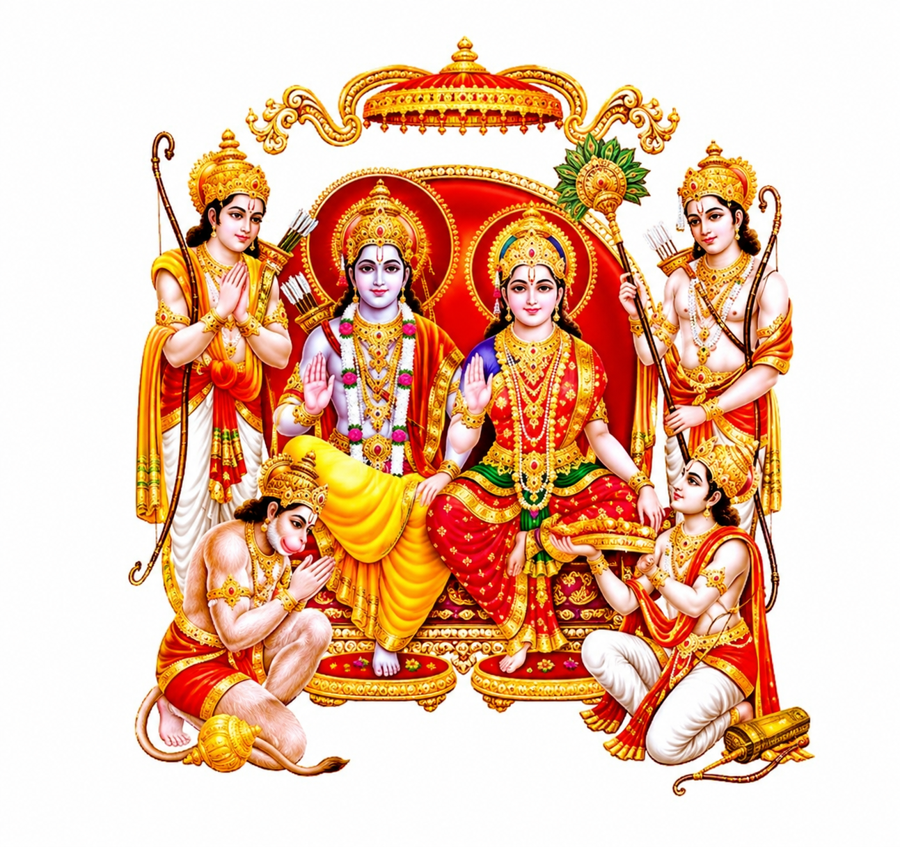
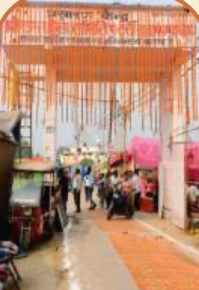

शुक्रवार · २७ नवम्बर २०२६
मेला शुभारम्भ और शोभायात्रा
पट्टी का ऐतिहासिक दशहरा मेला भव्य शोभायात्रा के साथ आरम्भ होगा।

श्री रामलीला समितिपट्टी · प्रतापगढ़पट्टी, प्रतापगढ़
स्थापित: 1910 पंजीकृत समिति
पट्टी के ऐतिहासिक दशहरा मेले, रामलीला और भरत मिलाप की सांस्कृतिक परंपरा में आपका स्वागत है।

मेला मंच, प्रवेश द्वार और दशहरा उत्सव की तस्वीरें।

दशहरा मेले के लिए सजा हुआ मंच।
पट्टी के ऐतिहासिक दशहरा मेला का इतिहास 117 वर्ष पुराना है वर्ष 1910 में पट्टी के थानेदार रहे श्री सेवाराम सिंह ने मेले की परंपरा की शुरुआत करते हुए नगर के मध्य खाली पड़ी जमीन पर मेला लगवाना शुरू किया। प्रारंभिक समय में उनके साथ सहयोगी के रूप में नगर के निवासी श्री बाबूलाल जैन, श्री राम नारायण हलवाई, श्री रामस्वरूप सिंह सहित अन्य नगर निवासी रहे। बाद में मेले का संचालन श्री मेघराज गुप्ता, श्री बब्बा सोनी, श्री छोटेलाल खंडेलवाल, श्री राम कुमार जैन, कृष्ण किशोर श्रीवास्तव व श्री मंगतूराम खंडेलवाल ने संभाल ली। मेले के महत्व को देखते हुए वर्ष 1914 में अमरगढ़ रियासत की ठकुराइन गजराज कुंवरि तालुकेदरिया पट्टी, सैफाबाद हिस्सा 11 द्वारा मेला लगाने के लिए कुछ जमीन दान कर दी थी। वर्ष 1920 में रामगंज रियासत द्वारा धार्मिक भावना से प्रभावित होकर मेला स्थल पर मेघनाथ की लगभग 20 फुट लेटी हुई प्रतिमा के निर्माण के साथ ही उसी के समीप सीता चबूतरा व रावण के पुतले को बांधने के लिए 10 फुट स्तंभ का पक्का निर्माण करवा कर उसे चिरास्थाई कर दिया। जो आज भी मेला मैदान में सुरक्षित है। जिसका उपयोग प्रतिवर्ष आयोजित होने वाले मेला के दौरान किया जाता है। पट्टी के ऐतिहासिक मेले का महत्व धीरे-धीरे बढ़ा तो मेला आयोजको द्वारा इसके ऐतिहासिकता को देखते हुए सुचारु रूप से संचालन के लिए "श्री रामलीला समिति पट्टी" के नाम से संस्था बनाकर संस्था द्वारा मेला आयोजित किया जाने लगा। संस्था के संस्थापक अध्यक्ष डॉ पीएन सुरेशम को चुना गया। इनके साथ श्री मेघराज गुप्ता को प्रबंधक, श्री पन्नालाल खंडेलवाल को महामंत्री, जनाब मो. नजीर उर्फ मिठाई लाल को कोषाध्यक्ष चुना गया। इनके साथ श्री हरिश्चंद्र जायसवाल, श्री कृष्णा चौरसिया, श्री रहमतुल्लाह सहित नगर के अन्य लोग सहयोग करने लगे। प्रारंभ में मेले का स्वरूप काफी छोटा था, लेकिन धीरे-धीरे मेले की प्रसिद्ध बढ़ने लगी तो यहां पर प्रदेश के अन्य जनपदों के व्यापारी भी आने लगे मेला में मनोरंजन के लिए झूला, जादू, सर्कस, चिड़ियाघर के साथ दैनिक उपयोग के वस्तुओं की दुकाने प्रदेश के भिन्न-भिन्न जनपदों से आने लगी। वर्तमान समय में मेला का यह स्वरूप काफी वृहद हो गया है। मेला आयोजन के एक सप्ताह पूर्व से ही मेला मैदान में प्रदेश के भिन्न-भिन्न जनपदों से दुकानदार आने लगते हैं, जो मेला के आयोजन में महत्वपूर्ण भूमिका निभाते हैं।
मेला रपट पढ़ें ↗रामलीला, मेला और भरत मिलाप।
सभी का सादर आमंत्रण।
पट्टी का ऐतिहासिक दशहरा मेला भव्य शोभायात्रा के साथ आरम्भ होगा।
भरत मिलाप २९/३० नवम्बर २०२६ की रात्रि में सम्पन्न होगा।
तिथियाँ समिति के २०२६ आयोजन पोस्टर के अनुसार।
समिति की मेला रपटों और आमंत्रणों को पढ़ें। इनमें मेले का कार्यक्रम, सांस्कृतिक लेख और समिति का परिचय शामिल है।
कार्यक्रम, फोटो और वीडियो के लिए समिति के सोशल चैनल देखें।
YouTube चैनल खोलें ↗वेबसाइट और सोशल मीडिया पर हमसे जुड़ें।